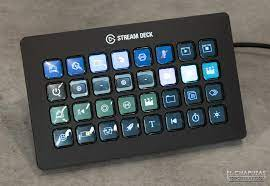
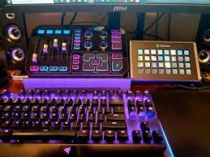

Intrduccion
Los Stream deck es una mesa de realización en miniatura,perfecto para la actividad del streamer dado que las mesas de realización son enormes, caras y muy complejas de manejar, la idea es que se puedan alternar las cámaras, realizar transiciones fluidas y otro tipo de funciones que permiten dichas mesas, fue desarrollada por Elgato y es ampliamente usada por una gran cantidad de personas dedicadas a la creacion de contenido, pues, como hemos mencionado anyteriormente, sirve para controlar los diversos dispositivos necesarios para llevar a cabo una retransmision en vivo de calidad
Usos
La función principal de Stream Deck es ayudar a los streamers, ya sea en YouTube, Twitch o cualquier plataforma que utilices. Hay mucho que decir sobre la flexibilidad de los controles que le brinda este dispositivo, a veces, esto incluye controles simples que lo ayudan a seguir siendo profesional.
Precios
Contamos con un marco bastante amplio de precios, los cuales se adaptan a las funciosnes y blosillos de diferente publico que rondan los 94,99 para los mas cortos en presupuesto y 310,98 para las personas que se pueden permitir un poco mas
¿Merece la pena?
Las ventajas que ofrece este aparato para las personas que organizan eventos, hacen stream o se dedican a la realizacion son bastante obvias, pues ayuda en gran medida a la organizacion de esta, ahora vien, para las personas amateur no es necesario, pues esta mas enfocado hacia un perfil profesional en este ambito, es decir si te encuentras en un marco de ocio, no es necesario.